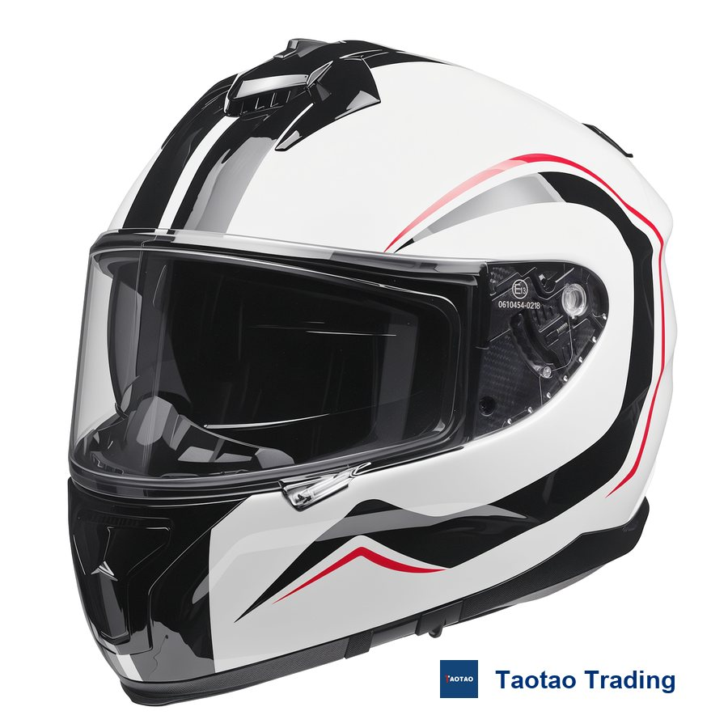
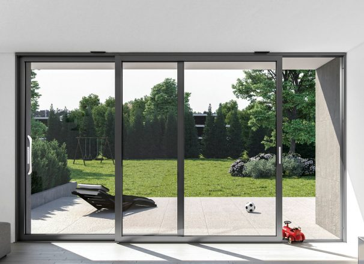
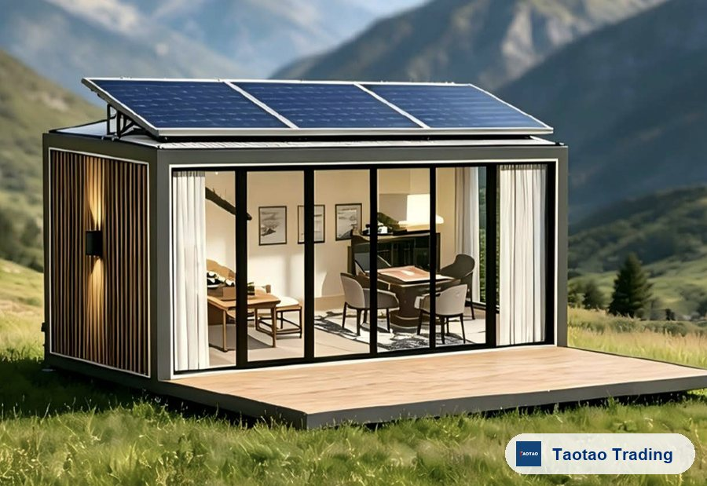
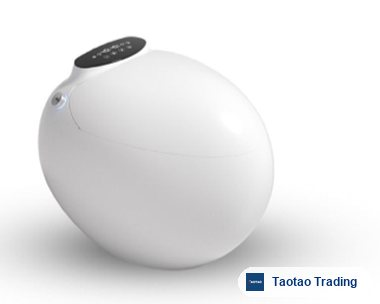

Motorcycle Helmets & Visors
Browse full-face, open-face, off-road, bicycle and ski helmet groups, plus aftermarket visor families. Ask about model fit, market documents, graphics and sample options.
Browse helmet models →Browse representative products across helmets, building materials, energy and industrial equipment, and consumer goods. Share your market, quantity and specifications; we help organize suitable options, supplier quotations, samples and order follow-up.
Browse representative categories, then share your target use, quantity, market and customization needs. We help clarify suitable options, specifications, quotations, samples and OEM/ODM questions with relevant suppliers.

Browse full-face, open-face, off-road, bicycle and ski helmet groups, plus aftermarket visor families. Ask about model fit, market documents, graphics and sample options.
Browse helmet models →
Compare thermal-break windows and doors, door closers, hinges and friction stays by system, application, finish and available catalog specifications.
Browse building products →
Explore modular-cabin references and co-extrusion or aluminum-core decking systems. Share project drawings, installation conditions and destination-market requirements.
Browse project products →PV mounting structures, galvanized and zinc-aluminum-magnesium components, C/Z purlins, steel profiles and project-based fabrication options.
Browse PV and steel products →Browse air-source heat pumps, charging and storage equipment, LED displays, industrial automation applications, heating elements and process lubricants.
Browse industrial categories →
Smart toilets and sanitary ware, jewelry packaging, apparel, leather goods and beauty products. Browse representative models or send a custom sourcing request.
Browse consumer categories →A useful quotation starts with a clear product requirement. We separate confirmed model facts, supplier answers and open items so you can compare options without guessing.
We organize the intended use, material, dimensions, target market, reference standard, colors, branding and packaging questions that suppliers need to answer.
Output: a practical product brief for supplier comparison.We compare stated product scope, accessories, packaging, logo method, tooling and other included or excluded items before treating prices as comparable.
Output: comparable quotation points and unresolved differences.Commercial and compliance details are recorded by model and quantity. Unconfirmed supplier statements remain open items until the relevant evidence is available.
Output: a written list of confirmed terms and items still pending.Watch product demonstrations, model comparisons, supplier visits and practical sourcing decisions from current work — including helmets and visors, building materials, industrial goods and consumer products.
A practical compatibility check covering helmet model, mounting points, finish, target market, colors, MOQ and sample options.
Choose a focused sourcing task or an end-to-end package. Product scope, supplier answers, commercial terms and verification needs are agreed for each project.
Turn your target use, specification, quantity and market into a focused product search and a clearer basis for comparing supplier quotations.
Coordinate available samples and clarify supplier-confirmed options for colors, logos, packaging, tooling and other customization points.
Follow agreed production milestones and inspection criteria, with photos, findings and open items recorded for the checked stage.
Compare lawful public information, supplier-provided documents and scoped on-site observations when the project requires additional supplier evidence.
Clear product, commercial and verification checkpoints keep each sourcing project moving.
Send drawings, samples, target models or just a description. You get a reply within one business day where possible.
We compare relevant product and supplier options, then organize the specification and quotation questions that still need answers.
Available samples, customization, MOQ, lead time and commercial terms are confirmed by model and quantity before the next step.
Progress follow-ups, inspections against your checklist, photo and video evidence at agreed stages.
Pre-shipment checks, loading supervision where agreed, and a partner who answers after the container sails.
A broad catalog only helps when a buyer can turn it into a usable shortlist, comparable quotations, samples and clear next steps. We combine product coordination with proportionate supplier checks and plain-English follow-up.
We turn your target use, quantity, market and reference specifications into a clearer supplier brief, comparison list and next-step checklist.
Founder Katherine Tu spent over ten years in corporate credit at a state-owned bank. That experience supports disciplined review of lawful public information, supplier documents and observable operating evidence.
Based in Zhaoqing, Guangdong, we coordinate with suppliers in the region and can arrange scoped factory visits or inspections when required.
Katherine holds a Master of Translation and Interpreting from Guangxi University. Product requirements, supplier answers, confirmed facts and open items are kept clear.
Start with the product. Confirm the details before you commit.Taotao Sourcing's working principle
We publish product demonstrations, factory visits and practical sourcing observations on YouTube and LinkedIn so buyers can understand the process behind the catalog.
Share a photo, specification, target quantity, market or reference model. We will reply with the next practical step and any information still needed.